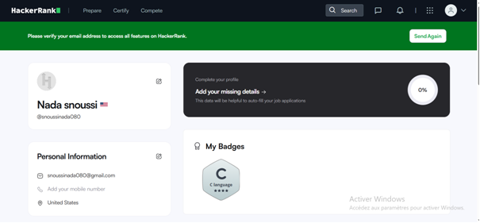
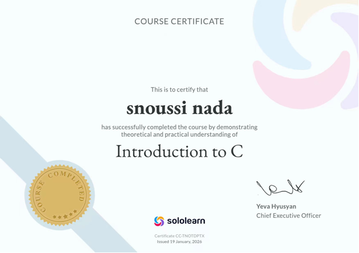

HackerRank has been an essential platform in my journey to master C programming. When I first began the course, writing code felt completely abstract, and debugging even the smallest syntax errors was incredibly frustrating. HackerRank provided a structured environment where I could take theoretical knowledge from lectures and apply it directly to practical problems. The difficulty curve on the platform allowed me to start with simple "Hello World" tasks and gradually progress to complex algorithmic challenges involving arrays, strings, and dynamic structures. One of the most significant benefits of using HackerRank was learning how to handle standard input and output effectively. In C, reading data properly using scanf or fgets can be tricky, especially when dealing with mixed data types or trailing whitespaces. By practicing daily, I developed a strong muscle memory for proper formatting and syntax.
Furthermore, the conditional statements and loops section forced me to think critically about optimization. Passing the initial test cases was easy, but optimizing the code to pass the hidden test cases—which tested for extreme boundary conditions and execution time limits—taught me to write clean and efficient code. I learned that an algorithm that works for small inputs might completely fail or time out when processing millions of data points. This realization shifted my mindset from just trying to get a program to work to focusing on time and space complexity.
Moving on to more advanced topics, the exercises on arrays and string manipulation were critical. In C, strings are simply null-terminated arrays of characters, meaning manual manipulation requires deep precision to avoid buffer overflows or off-by-one errors. HackerRank's rigorous testing suite caught every edge case I missed, which ultimately made me a more disciplined developer. Later in the semester, tackling challenges related to structures and pointers was a true turning point. Pointers are notoriously difficult for beginners because they require tracking direct memory addresses. Through hands-on practice, I learned how to pass arguments by reference, allocate memory dynamically using malloc, and free that memory properly to prevent resource leaks. Earning badges and certificates on HackerRank served as a great motivational tool. Each milestone achieved was a clear indicator of my growing technical proficiency. Looking back, the hours spent debugging code on HackerRank were highly rewarding, as they completely transformed my foundational understanding of computer science and problem-solving.

SoloLearn played a complementary yet equally vital role in my technical education last semester. While HackerRank focused heavily on intense algorithmic problem-solving and optimization, SoloLearn offered a highly organized, modular approach to learning the syntax and theory of C programming. The platform's bite-sized lessons were perfect for reinforcing the concepts I learned in class, allowing me to review materials at my own pace from anywhere. Each module broke down complex ideas into simple, easily digestible components, followed immediately by interactive quizzes. These quizzes were excellent for testing my immediate comprehension and catching subtle misunderstandings before they turned into bad coding habits. For instance, the lessons on variable scope and storage classes helped clarify the differences between local, global, and static variables, which can significantly alter how a program behaves.
SoloLearn’s built-in code playground was another fantastic feature. It allowed me to instantly experiment with small code snippets, modify variables, and see the compiler outputs in real-time without needing to set up a complex development environment on my local machine. This sandbox environment encouraged curiosity and experimentation. I frequently used it to test how different control flow structures, like switch-case statements or nested loops, executed under various scenarios. Another area where SoloLearn excelled was explaining functions and recursion. Understanding how the call stack manages function execution and how a recursive function breaks down a problem into base cases can be conceptually difficult. The visual explanations and step-by-step code execution traces provided by SoloLearn made these abstract concepts highly visual and understandable.
Furthermore, the community aspect of the platform was incredibly beneficial. Whenever I encountered a challenging quiz question or an ambiguous explanation, the comment sections were filled with detailed breakdowns, alternative code examples, and helpful tips from peers and experienced programmers worldwide. Reading through these discussions often provided alternative perspectives on how to solve a single problem, broadening my overall technical vocabulary. Completing the entire C programming track on SoloLearn required consistent discipline and effort, culminating in a certificate of completion. This certificate represents not just the hours invested into the platform, but a comprehensive understanding of the foundational principles of software development. It gave me the confidence needed to tackle larger academic projects and provided a solid bridge to learning HTML and CSS later in the year.
Reflecting on my coursework over the past year, I can confidently say that my programming skills have grown exponentially. Moving from the strict, logic-heavy environment of C programming to the visual and creative world of front-end web development has given me a well-rounded appreciation for software engineering. C programming taught me how computers work under the hood, instilling a deep respect for memory management, algorithmic logic, and structural efficiency. On the other hand, web programming allowed me to bridge that technical logic with user-centric design, creating functional interfaces that users can interact with. This combination of low-level and high-level programming has built a resilient foundation for my academic and professional future.